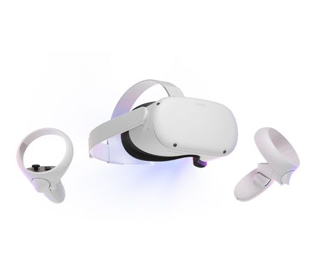
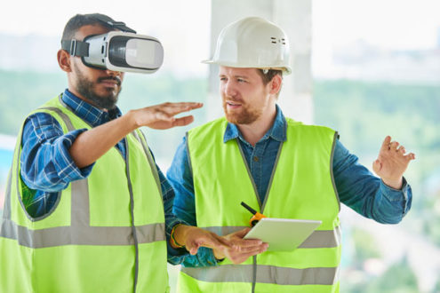

L'expression « réalité virtuelle » ou « Virtual Reality » correspond à une
technologie informatique qui simule la présence physique d'un utilisateur
dans un environnement artificiellement généré par des logiciels.
L’utilisateur peut aussi interagir avec cet environnement fictif. La
réalité virtuelle reproduit donc artificiellement une expérience
sensorielle, qui peut inclure :
• la vue
• le toucher
• l'ouïe
• l'odorat.
A l’origine elle a été développée pour reproduire des situations complexes
et proposer des simulations ou des entrainements. On peut penser par
exemple aux simulateurs de vol qui permettent aux pilotes de ligne de
s’exercer dans des situations à risque.
Voir ci-dessous un simulateur de vol :
Avec la miniaturisation des technologies d’affichage et le progrès de
l’informatique, la réalité virtuelle a gagné la sphère privée. Là où
autrefois il fallait construire une pièce entière pour simuler un
environnement (cockpit d’avion par exemple) (voir si dessus), aujourd’hui
tout le monde peut enfiler un casque de réalité virtuelle et se retrouver
plongé au cœur de la jungle amazonienne, dans un vaisseau spatial ou au
bord d’un ravin !
Voir ci-dessous ce dont est capable un casque de réalité virtuel :
En quelques années les casques de réalité virtuelle se sont ainsi
développés à une vitesse prodigieuse. Les éditeurs de jeux et de logiciel
ont suivi et fournissent aujourd’hui un grand nombre de produits qui
autorisent une immersion totale de l’utilisateur. L’essentiel du marché
est d’ailleurs tourné vers le casque vr de gaming applications plus « sérieuses sont encore rares.


Le fonctionnement d’un casque de vr est assez simple même s’il met en
œuvre des technologies complexes. Dans la réalité virtuelle, les
utilisateurs ne regardent pas un écran plat situé devant eux, mais à
travers un casque qui englobe tout le champ de vision. Ce casque projette
une petite image pour chaque œil, et le cerveau les rassemble pour les
transformer en une vision 3D.
Comme les lentilles du casque amplifient l’image, les joueurs voient des
images qui remplissent leur champ de vision. Ces images bougent avec les
mouvements de la tête de la personne étant donné que le casque est fixé
sur celle-ci. Le logiciel adapte alors l’image en fonction de la position
de la tête et de l’angle de vue. Tout comme si l’utilisateur tournait
vraiment la tête dans le monde virtuel, lui permettant de regarder vers le
ciel ou derrière lui par exemple. C’est cet effet qui donne une sensation
profonde d’immersion et qui fait en sorte que vous oubliez assez
rapidement l’écran fixé devant vos yeux.
Pour donner une sensation de réalité et de fluidité du monde dans lequel
on est immergé, les casques vr doivent réaliser des prouesses techniques
en matière d’affichage. Contrairement à la télévision qui a une fréquence
d’affichage de 30 images par seconde, la réalité virtuelle affiche des
images en mouvement à 90 images par secondes voire même parfois 120. Plus
la vitesse d’affichage est importante, plus le joueur se sentira immergé
dans un monde réel.
Il existe encore très peu de casques de réalité virtuelle complètement universels. Votre choix va donc dépendre du type de matériel sur lequel vous souhaitez l’utiliser. Vous pouvez ainsi trouver des casques de réalité virtuelle utilisables avec des PC ou avec des consoles de jeux (certains sont mêmes associés uniquement à un type de console) ou encore avec des smartphones. Il existe certains produits qui peuvent fonctionner sur plusieurs plateformes à la fois mais ils sont rares. Les casques vr les plus performants aujourd’hui sont ceux qui se trouvent dans les équipements pour pc ou pour consoles. Ensuite, dans chaque gamme, on peut distinguer 4 critères essentiels à considérer pour choisir un casque vr :
La qualité de l’affichage est essentielle pour une expérience de réalité virtuelle réussie. Elle va dépendre particulièrement du type de dalle d’écran qui est utilisée pour le casque et bien sûr aussi de sa définition. Aujourd’hui les meilleurs produits sont équipés d’écrans 4 K UHD ou d’écrans Oled. Ces derniers sont remarquables pour leur profondeur de noir et les ambiances nocturnes. Ils ont aussi l’avantage d’un temps de rémanence très faible : les images persistent peu sur l’écran, augmentant ainsi la sensation de vision réelle.
Un casque de réalité virtuelle doit bien sûr détecter tous les mouvements de l'utilisateur le plus rapidement possible et de manière fidèle. C’est important pour pouvoir afficher une image avec un décalage minimal avec les mouvements. Si ce décalage est trop important cela crée une sensation d’irréalité et d’inconfort. Chez certains joueurs cela peut aller jusqu’à la sensation de malaise. Aujourd’hui de nombreux casques hauts de gamme ont une latence de moins de 20 ms. Il faut considérer que la latence à ne pas dépasser se situe à environ 40 ms. La fréquence d'affichage est aussi importante pour la réactivité du casque. Aujourd’hui les meilleurs produits se situent à 90 voire 120 Hz. Mais il en existe des corrects à 60 Hz. Les produits en dessous de cette valeur proposent une sensation d’immersion moindre, et sont à éviter.
Lors d’une session de jeu il est important que le casque se fasse oublier. Si votre casque vr n’est pas confortable, au bout d’un certain temps, vous n’aurez qu’une envie, c’est de l’enlever. Premier paramètre important : le poids. La plupart des casques dépassent aujourd’hui les 200 grammes et certains vont jusqu’à 400 grammes. Au-delà de cette limite on peut considérer que le poids sera trop lourd au fil du temps. Il faut aussi une bonne mousse d’appui sur le visage pour que le casque puisse s'adapter à des morphologies et visions différentes (port de lunettes, réglage de la netteté...). Enfin, veillez à ce que les sangles soient réglables pour bien adapter votre casque vr à la dimension de votre visage.
Certains casques sont vendus « nus » mais d’autres modèles proposent des accessoires visant à augmenter la sensation d’immersion. On en trouve ainsi livrés avec des contrôleurs de mouvement qui autorisent plus qu'une expérience de VR classique, en position assise. L'appareil permet alors une immersion de tout le corps, grâce à la possibilité de se déplacer réellement sur plusieurs mètres (il y a des capteurs infrarouges à installer dans la pièce) et la reconnaissance de mouvements. Les accessoires sonores sont aussi importants. Certains modèles comportent l’intégration de l’audio avec le casque VR, d’autres ne le prévoient pas et laissent l’utilisateur s’équiper de son propre système (ou de se passer de casque sonore). Nous conseillons les systèmes les plus intégrés possibles car ce sont ceux qui permettent une immersion ultime et efficace.